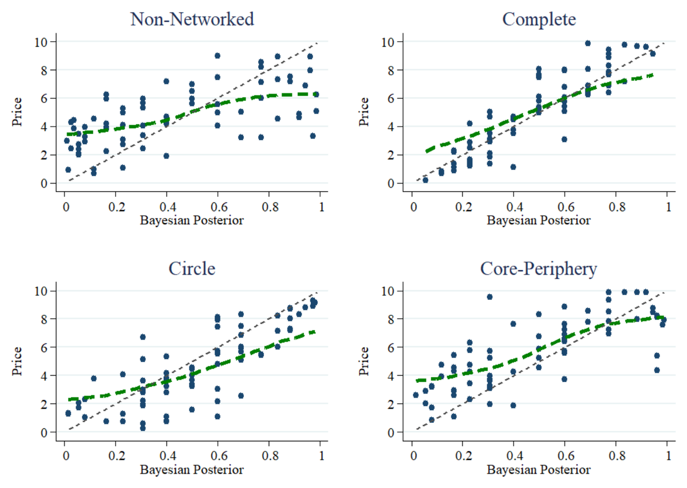
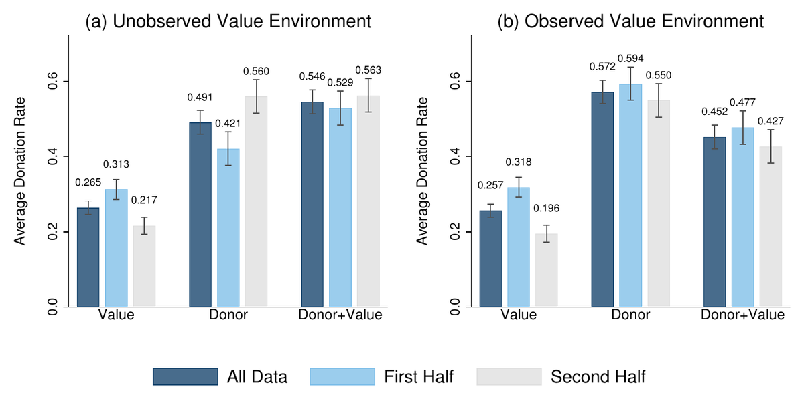
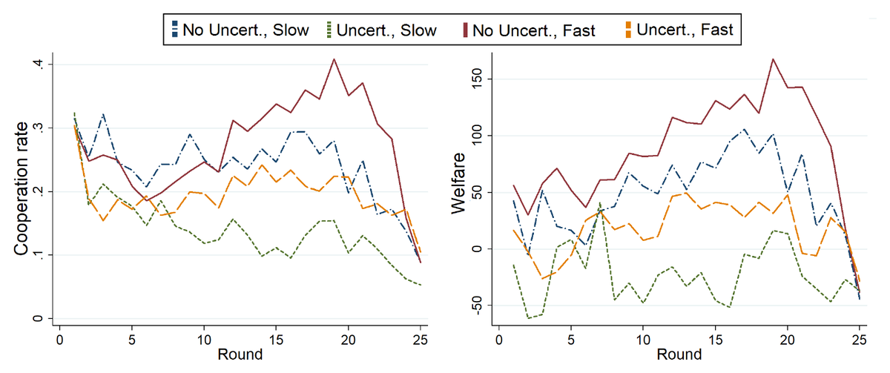

Yohanes Eko Riyanto
Professor of Economics · Chair, School of Social Sciences
Nanyang Technological University, Singapore
How information, incentives, and institutions shape economic behavior.
I am an experimental and behavioral economist and Professor of Economics at Nanyang Technological University, Singapore, where I serve as Chair of the School of Social Sciences. My research uses laboratory experiments to examine decision-making in financial markets, social networks, and institutional settings.
My work has appeared in the Journal of Finance, Management Science, Economic Journal, Journal of Economic Theory, Review of Economics and Statistics, Games and Economic Behavior, International Economic Review, Experimental Economics, European Economic Review, Journal of Economic Dynamics and Control, and Journal of Economic Behavior and Organization, among others.
Before becoming Chair, I served as Associate Dean (Research) of the College of Humanities, Arts, and Social Sciences, and held several school-level positions spanning research, academic affairs, and undergraduate education. I am an Associate Editor of the Journal of Economic Behavior and Organization. My research has attracted competitive funding from bodies including Singapore's National Research Foundation, Ministry of Education, Economic Development Board, Temasek Lab, AI Singapore, and the Hong Kong Research Grants Council.
My teaching spans behavioral economics, experimental methods, and microeconomics. Outside the classroom, I have engaged with government agencies and industry partners, including Singapore's Land Transport Authority, Economic Development Board, and Ministry of Social and Family Development, on applied research. A collaboration with ENGIE and ERI@N through the PowerZ initiative explored whether information disclosure and behavioral design could encourage more energy-efficient choices in practice.
Selected Research
All publications →-
Journal of Finance · 2019
Costly Information Acquisition, Social Networks, and Asset Prices: Experimental Evidence

Average price conditional on the full-information Bayesian posterior, by network treatment; dashed diagonal = fundamental value (Figure 3 in the paper). An asset market experiment on how information networks change traders' incentives to acquire costly information. Communication among traders crowds out information production, as traders free ride on signals bought by their neighbors. Information sharing raises trading volume and liquidity but does not improve price informativeness; net earnings and welfare are higher because fewer costly signals are purchased.
2020 Vernon L. Smith Award for Excellence in Experimental Finance Read the paper: Costly Information Acquisition, Social Networks, and Asset Prices → -
Management Science · 2025
Incentivizing Organ Donation under Different Priority Rules: The Role of Information

Average donation rates by allocation rule when transplant values are (a) unobserved and (b) observed (Figure 1 in the paper). Theory and laboratory experiments on how organ allocation rules affect the decision to register as a deceased donor. The study compares a donor-priority rule with dual-incentive rules that also account for patients' valuations of transplantation. Which rule works best depends on information: when valuations are unknown at the time of the decision, dual-incentive rules raise donation rates; when valuations are known, they create unequal incentives that can weaken their effect.
Read the paper: Incentivizing Organ Donation under Different Priority Rules → -
Games and Economic Behavior · 2022
Cooperation and Punishment Mechanisms in Uncertain and Dynamic Social Networks

Cooperation rate and welfare over rounds, by reputational uncertainty and speed of network change (Figure 2 in the paper). An experiment on cooperation when people are uncertain about others' reputations and the network of interactions changes over time. Reputational uncertainty significantly decreases cooperation, while the pace of network change has only a second-order effect. In fast-changing networks, uncertainty makes participants more lenient when punishing by cutting links, which hinders the formation of cooperative clusters.
Read the paper: Cooperation and Punishment Mechanisms in Uncertain and Dynamic Social Networks →
Research Themes
More on my research →-
Experimental Asset Markets and Finance
Insider trading rules, trader networks, dark pools, algorithmic trading, and information sharing, with a focus on how information structure and market microstructure affect price efficiency and trader welfare.
-
Experimental Market Design
Organ donation enrolment under different priority rules, incentive schemes, and information provision, as well as repugnant transactions.
-
Cooperation, Coordination, and Social Networks
Mechanisms that sustain cooperation and coordination in social dilemmas, network formation, and the role of social identity in groups.
-
AI, Algorithms, and Behavioral Responses
How large language models compare with humans in financial prediction, how AI advice shapes investment decisions, and whether generative AI supports cooperation.
Leadership and Academic Service
Leadership at NTU
- Chair, School of Social Sciences2022–present
- Associate Dean (Research), College of Humanities, Arts, and Social Sciences2019–2021
- Associate Chair (Academic), School of Social Sciences2017–2019
- Associate Chair (Undergraduate Education), School of Humanities and Social Sciences2011–2017
Editorial Service
- Associate Editor, Journal of Economic Behavior and Organization
Awards
- Vernon L. Smith Award for Excellence in Experimental Finance, Society for Experimental Finance, for “Costly Information Acquisition, Social Networks, and Asset Prices”2020
- Finalist, Exeter Prize for Research in Experimental Economics, Decision Theory, and Behavioral Economics, for “Would You Pay for Transparently Useless Advice?”2016